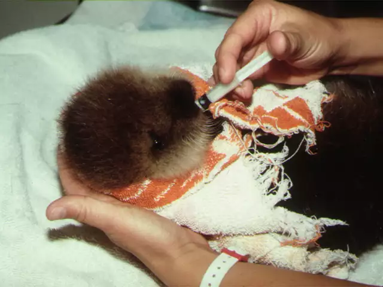
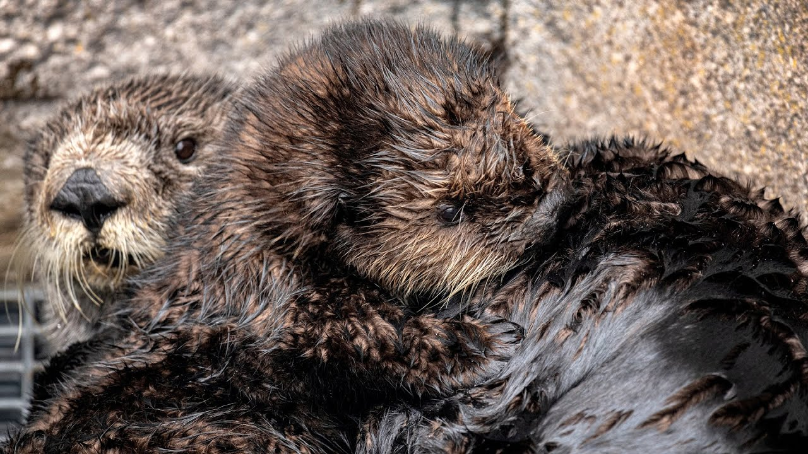

Early Days of Monterey Bay Aquarium
The Monterey Bay Aquarium has been caring for Southern Sea Otters since before they even opened as
an aquarium. In 1981, a concerned citizen brought their inexperienced 9-member staff an orphaned male
sea otter pup, who sadly died.
With a renewed determination to make sure that wouldn't happen again,
MBA joined the Southern Sea Otter Recovery Team in 1982 — a team created by the U.S Fish and
Wildlife Service to research and protect the struggling Southern Sea Otter population.
Read more about the history of MBA's Sea Otter Program.
Young Sea Otters were Hand-Fed

Sea Otter Surrogacy Program
In 2001, Monterey Bay Aquarium began their Sea Otter Surrogacy Program with Otter 217, a two-week-old male
pup, and Toola, a female otter at the aquarium who has just given birth to a stillborn pup. Toola immediately
adopted and raised Otter 217 as her own, and within 4 days of his release back into the wild, he was seen foraging
with other otters in Elkhorn Slough, an otter habitat near Monterey Bay. The success of Toola and Otter 217 lead
the way for otters like Rosa and Selka to do the same.
Selka, Rosa's Daughter, Raises Her Own Pup!
